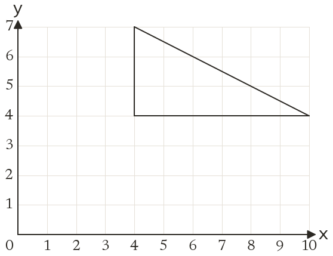
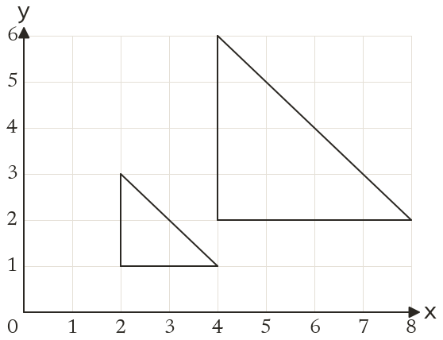
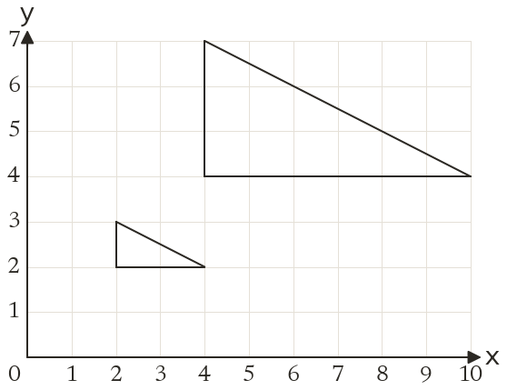

Westonbirt Maths · Transformations
Enlarging by a Fractional Scale Factor
Name: ______________________ Date: ____________
1
Enlarge the triangle by scale factor 12, centre (0, 0). Write down the corners of the image.
2
Enlarge the triangle by scale factor 13, centre (1, 1). Write down the corners of the image.
3
Enlarge the point (8, 12) by scale factor 14, centre (0, 0).
4
Enlarge the point (9, 5) by scale factor 12, centre (3, 1).
5
A rectangle 18 cm by 12 cm is enlarged by scale factor 23. Find the sides of the image.
Ext
Enlarge (7, 7) by scale factor 12, centre (1, 3). Which enlargement maps the image back?


